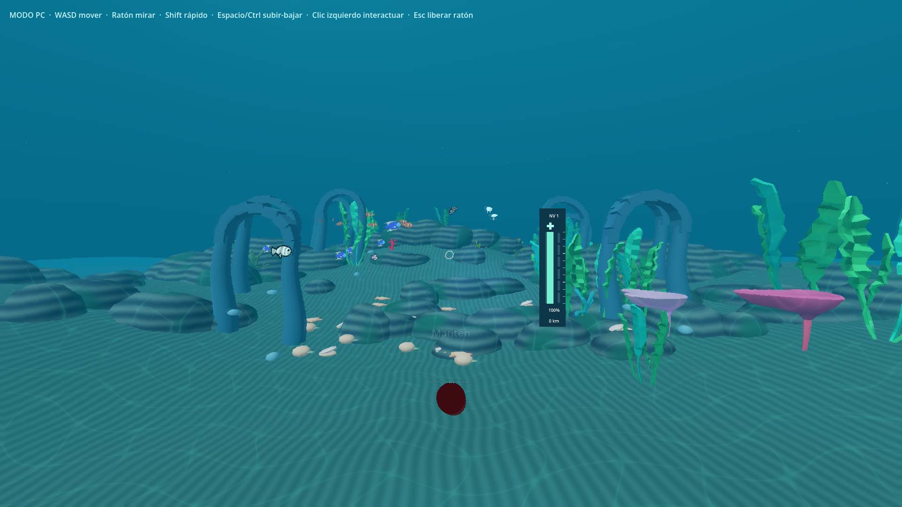

01 / Windows
Entra desde tu PC.
Juega con ratón y teclado, o conecta tu visor para disfrutarlo en PCVR.
Descargar para WindowsToma el mando de tu submarino. Descubre especies, fotografía sus secretos y protege la vida bajo el agua.
Meta Quest 2PC + PCVRManos o mandos
Juega con ratón y teclado, o conecta tu visor para disfrutarlo en PCVR.
Descargar para WindowsEjecuta la demo directamente en el visor, con controladores o seguimiento de manos.
Descargar para QuestRecorre cinco ecosistemas en una expedición educativa de cinco minutos, o continúa descendiendo en arcade.
Usa la cámara de la cabina para fotografiar animales y conservar tus descubrimientos.
Recoge basura, despliega filtrobots y mejora tu equipo. Pescar y conservar requieren equilibrio.
OceanVR-1.0.0-demo.exe. Mantén el archivo PCK y la DLL incluidos en esa misma carpeta.PC: apunta con el ratón y mantén clic izquierdo para interactuar. Usa WASD para moverte y P para pausar. La cámara se suelta con clic derecho.
VR con mandos: apunta y usa el gatillo; suelta la cámara con grip. Puedes pulsar los botones de la cabina directamente.
Sin mandos: usa el seguimiento de manos del visor para interactuar con los controles. Pausa y Reiniciar están en la cabina.
La demo 1.0 incluye los modos educativo y arcade, fotografías, almanaque, ajustes, pausa y reinicio. La visualización de modelos del almanaque ocurre dentro del juego; no incluye passthrough de realidad aumentada.
Esta es una demo para presentación y evaluación. Los recursos de terceros mantienen sus atribuciones; la descarga no concede derechos para reutilizarlos o comercializarlos. Consulta los créditos, las notas de la entrega y las sumas SHA256.